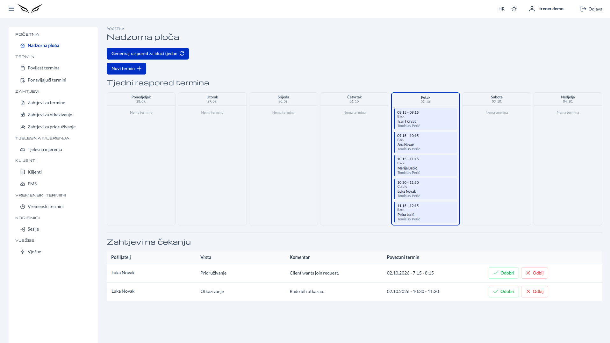

Apex Performance Fit
Apex Performance Fit mobilna je i web platforma koja povezuje trenere i sportaše unutar zajednice Apex Performance. Trenerima daje potpunu kontrolu nad njihovim trenerskim poslom, uključujući upravljanje klijentima, raspored i praćenje treninga, dok sportaši mogu rezervirati termine, pratiti svoj plan treninga i ostati u kontaktu sa svojim trenerom — sve kroz čisto i intuitivno iskustvo na mobitelu i webu.
Apex Performance Fit is a mobile and web platform connecting trainers and athletes within the Apex Performance community. It gives trainers full control over their coaching business including client management, scheduling, and session tracking, while athletes can book sessions, follow their training plan, and stay connected with their coach, all across a clean, intuitive experience on both mobile and web.
Apex Performance Fit è una piattaforma mobile e web che collega allenatori e atleti all'interno della community Apex Performance. Offre agli allenatori il pieno controllo della loro attività di coaching, inclusi gestione dei clienti, pianificazione e monitoraggio delle sessioni, mentre gli atleti possono prenotare sessioni, seguire il proprio piano di allenamento e restare in contatto con il proprio coach, il tutto con un'esperienza chiara e intuitiva su mobile e web.
Apex Performance Fit ist eine Mobile- und Web-Plattform, die Trainer und Athleten innerhalb der Apex-Performance-Community verbindet. Trainer erhalten die volle Kontrolle über ihr Coaching-Geschäft – inklusive Kundenverwaltung, Terminplanung und Trainingsprotokoll –, während Athleten Trainings buchen, ihrem Trainingsplan folgen und mit ihrem Coach in Verbindung bleiben können, und das mit einer klaren, intuitiven Oberfläche auf Mobilgeräten und im Web.

TehnologijeTechnologiesTecnologieTechnologien
IzazovChallengeSfidaHerausforderung
Samostalni osobni treneri često se oslanjaju na raspršene alate, tablice, aplikacije za dopisivanje i ručno vođenje rasporeda kako bi upravljali svojim poslom. Takav rascjepkan pristup otežava točno praćenje treninga, kredita i plaćanja klijenata, dok sportaši teško prate svoj raspored treninga i učinkovito komuniciraju s trenerom. Cilj je bio stvoriti jedinstvenu platformu, prvenstveno za mobitele, koja pojednostavljuje cijeli trenerski proces i za trenere i za sportaše, bez nepotrebne složenosti.
Independent personal trainers often rely on scattered tools, spreadsheets, messaging apps, and manual scheduling to manage their coaching business. This fragmented approach makes it difficult to track client sessions, credits, and payments accurately, while athletes struggle to stay on top of their training schedule and communicate efficiently with their coach. The goal was to create a single, mobile-first platform that would streamline the entire coaching workflow for both trainers and athletes, without adding unnecessary complexity.
I personal trainer indipendenti si affidano spesso a strumenti sparsi, fogli di calcolo, app di messaggistica e pianificazione manuale per gestire la propria attività. Questo approccio frammentato rende difficile tenere traccia con precisione di sessioni, crediti e pagamenti dei clienti, mentre gli atleti faticano a seguire il proprio programma di allenamento e a comunicare in modo efficiente con il coach. L'obiettivo era creare un'unica piattaforma mobile-first che semplificasse l'intero flusso di lavoro per allenatori e atleti, senza aggiungere complessità inutili.
Unabhängige Personal Trainer arbeiten oft mit verstreuten Tools, Tabellen, Messaging-Apps und manueller Terminplanung. Dieser fragmentierte Ansatz erschwert es, Trainingseinheiten, Guthaben und Zahlungen der Kunden genau zu verfolgen, während Athleten Mühe haben, den Überblick über ihren Trainingsplan zu behalten und effizient mit ihrem Coach zu kommunizieren. Ziel war eine einzige Mobile-First-Plattform, die den gesamten Coaching-Ablauf für Trainer und Athleten vereinfacht – ohne unnötige Komplexität.
RješenjeSolutionSoluzioneLösung
Apex Performance Fit razvijen je kao nativna iOS i iPadOS aplikacija koja unutar jedne platforme nudi dva povezana iskustva. Treneri dobivaju vlastitu nadzornu ploču za upravljanje klijentima, praćenje kredita za treninge, zakazivanje termina i obradu zahtjeva za otkazivanje — bez papirologije. Sportaši dobivaju jednostavan način rezerviranja termina, praćenja rasporeda treninga i tjelesnih mjera, što ih drži motiviranima i povezanima s trenerom. Rezultat je čista, brza i intuitivna aplikacija koja uklanja trenje iz svakodnevnog trenerskog posla i pomaže izgraditi snažniji odnos trenera i sportaša.
Apex Performance Fit was developed as a native iOS and iPadOS application offering two connected experiences within one platform. Trainers get a dedicated dashboard to manage clients, track session credits, schedule appointments, and handle cancellation requests, all without paperwork. Athletes get a simple way to book sessions, follow their training schedule, and track body measurements, keeping them engaged and connected to their coach. The result is a clean, fast, and intuitive app that removes friction from day-to-day coaching operations and helps build a stronger trainer-athlete relationship.
Apex Performance Fit è stata sviluppata come applicazione nativa per iOS e iPadOS che offre due esperienze collegate in un'unica piattaforma. Gli allenatori dispongono di una dashboard dedicata per gestire i clienti, monitorare i crediti delle sessioni, fissare appuntamenti e gestire le richieste di cancellazione, il tutto senza scartoffie. Gli atleti hanno un modo semplice per prenotare sessioni, seguire il programma di allenamento e monitorare le misure corporee, restando coinvolti e in contatto con il proprio coach. Il risultato è un'app pulita, veloce e intuitiva che elimina gli attriti nella gestione quotidiana del coaching e aiuta a costruire un rapporto più solido tra allenatore e atleta.
Apex Performance Fit wurde als native iOS- und iPadOS-App entwickelt, die zwei verbundene Erlebnisse in einer Plattform vereint. Trainer erhalten ein eigenes Dashboard, um Kunden zu verwalten, Trainingsguthaben zu verfolgen, Termine zu planen und Stornierungsanfragen zu bearbeiten – ganz ohne Papierkram. Athleten können einfach Trainings buchen, ihrem Trainingsplan folgen und Körpermaße erfassen, was sie motiviert und mit ihrem Coach verbunden hält. Das Ergebnis ist eine klare, schnelle und intuitive App, die den Coaching-Alltag reibungslos macht und die Beziehung zwischen Trainer und Athlet stärkt.
Prikaz projektaProject ShowcasePresentazione del progettoProjektpräsentation
Ključne značajkeKey FeaturesCaratteristiche principaliHauptfunktionen
Dvostruko iskustvo za trenere i sportašeDual trainer & athlete experienceDoppia esperienza per allenatori e atletiDuale Oberfläche für Trainer & Athleten
Jedna platforma, dva povezana prikaza — treneri upravljaju svojim trenerskim poslom, a sportaši prate svoj trenažni put.
One platform, two connected views — trainers manage their coaching business while athletes follow their training journey.
Una piattaforma, due viste collegate: gli allenatori gestiscono la propria attività mentre gli atleti seguono il loro percorso di allenamento.
Eine Plattform, zwei verbundene Ansichten – Trainer verwalten ihr Coaching-Geschäft, Athleten verfolgen ihren Trainingsweg.
Upravljanje klijentima i praćenje kreditaClient management with credit trackingGestione clienti con monitoraggio dei creditiKundenverwaltung mit Guthabenverfolgung
Treneri mogu upravljati svojim klijentima i pratiti kredite za treninge bez tablica i papirologije.
Trainers can manage their client base and track session credits without spreadsheets or paperwork.
Gli allenatori possono gestire i propri clienti e monitorare i crediti delle sessioni senza fogli di calcolo o scartoffie.
Trainer können ihre Kunden verwalten und Trainingsguthaben ohne Tabellen oder Papierkram verfolgen.
Pametno zakazivanje terminaSmart appointment schedulingPianificazione intelligente degli appuntamentiIntelligente Terminplanung
Rezervirajte, pregledajte i upravljajte treninzima izravno iz aplikacije, tako da su svi rasporedi uvijek usklađeni.
Book, view, and manage training sessions directly from the app, keeping everyone's schedule aligned.
Prenota, visualizza e gestisci le sessioni di allenamento direttamente dall'app, mantenendo allineati gli impegni di tutti.
Trainings direkt in der App buchen, ansehen und verwalten – so bleiben alle Termine abgestimmt.
Zahtjevi za otkazivanje i odobrenjeCancellation & approval requestsRichieste di cancellazione e approvazioneStornierungs- & Genehmigungsanfragen
Ugrađeni sustav zahtjeva omogućuje trenerima brzo odobravanje ili odbijanje otkazivanja, bez dugog dopisivanja.
A built-in request system lets trainers approve or reject cancellations quickly, without back-and-forth messaging.
Un sistema di richieste integrato consente agli allenatori di approvare o rifiutare rapidamente le cancellazioni, senza scambi di messaggi.
Ein integriertes Anfragesystem ermöglicht Trainern, Stornierungen schnell zu genehmigen oder abzulehnen – ohne langes Hin und Her.
Praćenje tjelesnih mjeraBody measurement trackingMonitoraggio delle misure corporeeErfassung der Körpermaße
Sportaši mogu bilježiti i pratiti tjelesne mjere kroz vrijeme i tako vidjeti napredak prema svojim ciljevima.
Athletes can log and monitor body measurements over time to visualize progress toward their goals.
Gli atleti possono registrare e monitorare nel tempo le proprie misure corporee per visualizzare i progressi verso i loro obiettivi.
Athleten können ihre Körpermaße über die Zeit erfassen und verfolgen, um ihre Fortschritte sichtbar zu machen.
Čisto, brzo i intuitivno sučeljeClean, fast, and intuitive interfaceInterfaccia pulita, veloce e intuitivaKlare, schnelle und intuitive Oberfläche
Nativno iOS i iPadOS iskustvo izrađeno za brzinu i jednostavnost, kako bi se korisnici mogli usredotočiti na trening, a ne na snalaženje po izbornicima.
A native iOS and iPadOS experience built for speed and simplicity, so users can focus on training, not navigating menus.
Un'esperienza nativa iOS e iPadOS pensata per velocità e semplicità, così gli utenti possono concentrarsi sull'allenamento e non sulla navigazione dei menu.
Eine native iOS- und iPadOS-App für Tempo und Einfachheit – damit sich Nutzer aufs Training konzentrieren statt auf Menüs.